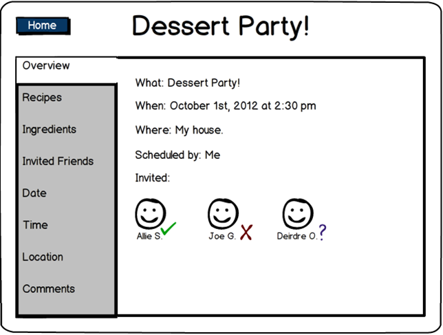
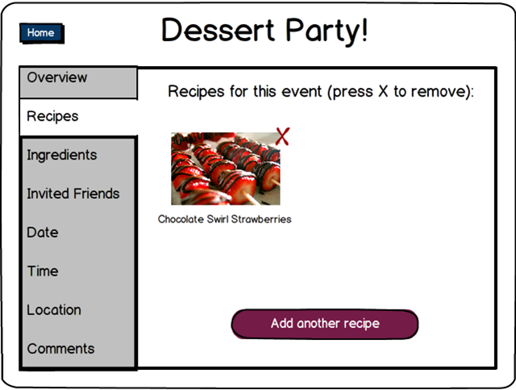
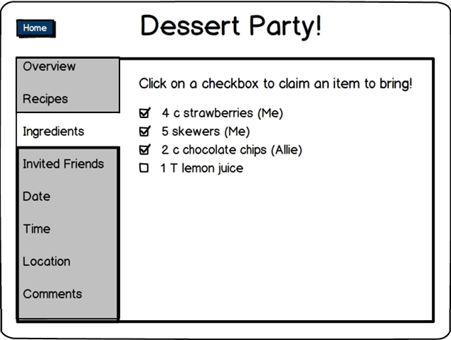
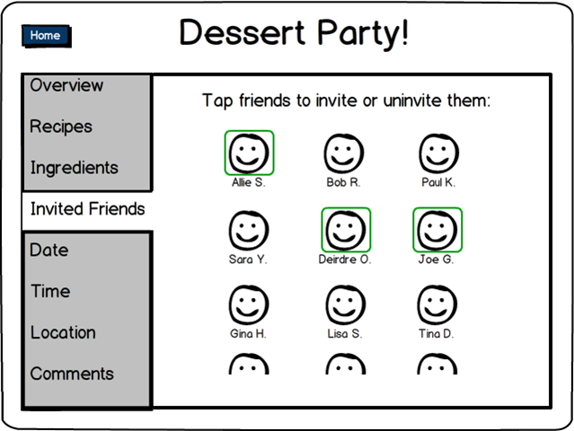
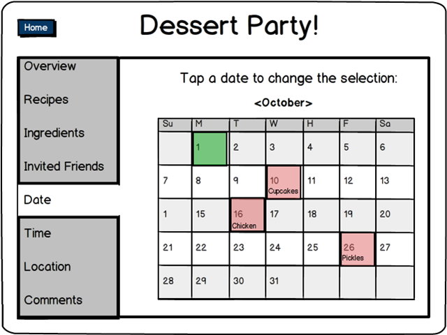
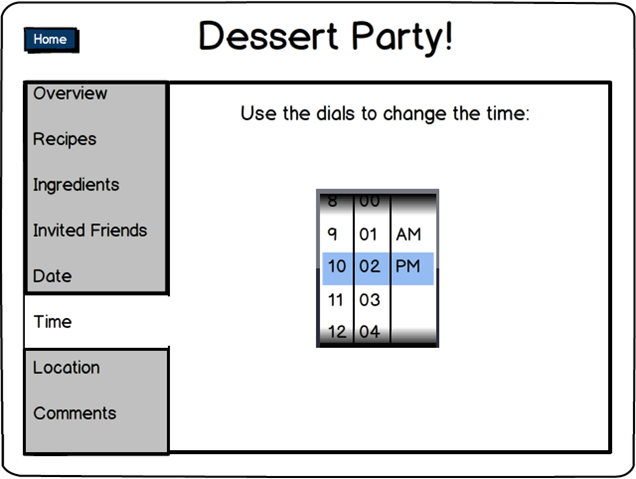
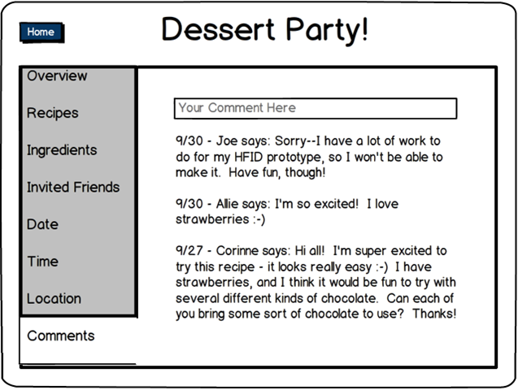
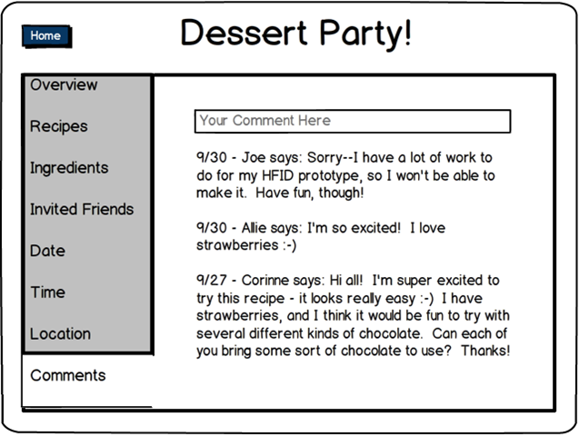

Fallera - Social Cooking
Human Factors Interface Design, Fall 2012

Viewing and editing a new event allows the user to see the details of an event on his or her timeline. If the user is the owner of the event, he or she can also edit the event. The event contains the same pieces of information as were inputted on the "Create New Event" page in addition to two new tabs: Ingredients and Comments. Users can navigate the tabs in any order they wish. Any changes to the event parameters show up as an update on friends' timelines. The page has the title of the event, and tapping on the page title allows the user to change the event title.
The first tab is the overview, which shows largely the same information as the Summary tab of the "Create New Event" page. One addition is the response of the individuals who were invited--a green check signifies accepted, a red x signifies declined, and a blue question mark signifies tentatively accepted. No mark indicates no response.
The user is shown what recipes were selected for the event and has the option to delete recipes (using the red x) or upload new recipes.
 The ingredients page shows all of the ingredients for the recipes to be made, with a checkbox for each. Each invited attendee can check off ingredients to bring to the event, and events that are checked off do not need claiming.  The friends page shows friends who were invited to the event. Tapping friends' pictures invites them (if they are not yet selected) or deinvites them (if they are already selected). Deselecting invitees will only affect their invitation if they have not yet responded to the event.  The date page shows the selected date for the event. Tapping on a different date changes the selected date for the event.  The time page shows the selected time for the event. Using the dials to select a different time changes the time of the event.  The location page shows the location specified for the event. Typing a different location in the text box changes the event location. The comments page allows the host and invitees to discuss the event. This is similar to other chat interfaces--users can type comments and their text is tagged with their name and a timestamp.

The comments page allows the host and invitees to discuss the event. This is similar to other chat interfaces--users can type comments and their text is tagged with their name and a timestamp.
